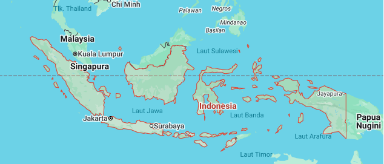
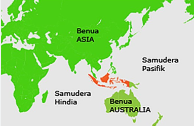
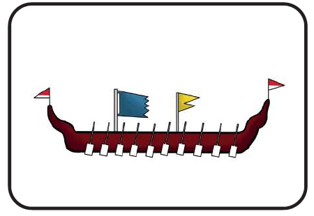
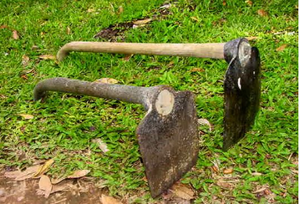
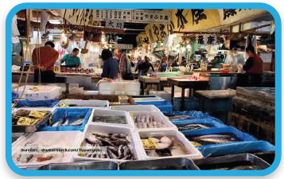
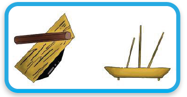

Bayangkan bumi yang bulat digambarkan di atas kertas rata. Itulah peta! Orang yang membuat peta disebut Kartografer.
Indonesia berada di lokasi strategis di antara:

Negara kita juga dihimpit oleh dua samudra luas:
Hal ini menjadikan Indonesia jalur perdagangan yang sangat ramai.
Sentuh arah mata angin untuk cek batas wilayah:
Indonesia adalah negara kepulauan (Archipelagic State) karena memiliki pulau yang sangat banyak.
Wilayah lautan kita jauh lebih luas dibanding daratannya.
Klik pulau yang menjadi ujung Indonesia:
Negara maritim adalah negara yang sebagian besar wilayahnya berupa perairan atau memiliki kawasan laut yang luas.

Dengan kondisi geografis yang memiliki banyak wilayah perairan, kapal laut dan perahu merupakan kebutuhan penting agar masyarakat bisa tetap terhubung antarpulau.
Negara agraris adalah negara yang sebagian besar rakyatnya bermata pencaharian dengan bercocok tanam.

Dengan wilayah daratan yang luas, penduduk di negara agraris dapat mengolah tanah untuk lahan pertanian dan perkebunan guna memenuhi kebutuhan hidup mereka.
Laut Indonesia yang luas memiliki banyak sekali manfaat, di antaranya:
Pasar ikan terbentuk dari kebutuhan masyarakat pantai untuk menjual hasil tangkapan mereka.

Dengan adanya pasar ikan, masyarakat lain juga dapat dengan mudah memenuhi kebutuhan hasil laut.
Alat pemotong dan penumbuk padi dibuat untuk mempermudah petani dalam panen dan pengolahan hasil bumi.

Saat ini, peralatan tradisional banyak digantikan mesin modern agar kegiatan pertanian semakin cepat selesai.
Festival laut atau festival padi diselenggarakan sebagai bentuk rasa syukur kepada Sang Maha Pencipta.